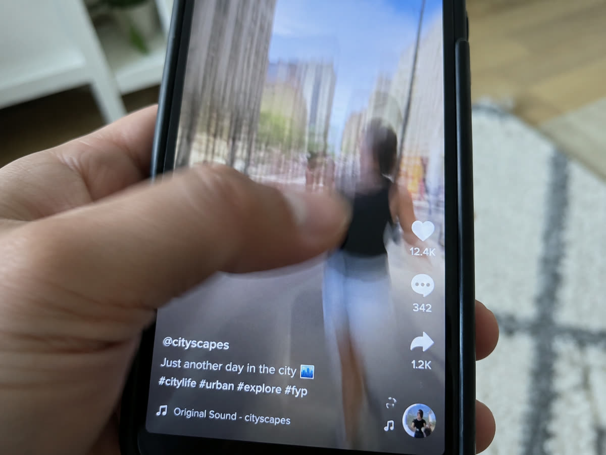
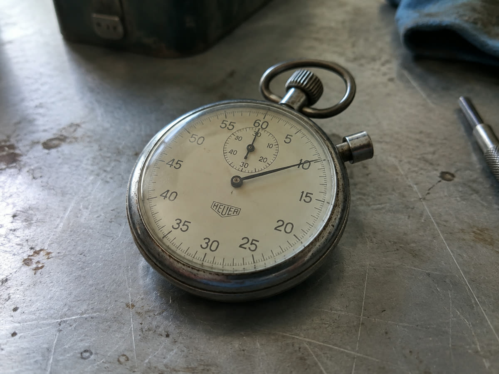

Die ersten zwei Sekunden entscheiden
Wer am Anfang nicht hängen bleibt, wischt weiter. Alles danach wird von diesen Leuten nie gesehen.
Es gibt in Kurzvideo nur eine Entscheidung, die wirklich zählt, und sie fällt in den ersten beiden Sekunden. Wer dort nicht hängen bleibt, wischt weiter, und zwar ohne darüber nachzudenken. Alles, was danach kommt, so gut es sein mag, wird von diesen Leuten nie gesehen.
Das klingt hart, hat aber eine angenehme Seite: Wenn ein Video nicht läuft, liegt es meistens nicht am ganzen Video. Es liegt am Anfang, und der lässt sich ändern.

Wie die Plattform das misst
Beide großen Plattformen schauen vor allem darauf, wie viele der Leute, denen ein Video gezeigt wurde, dabeigeblieben sind. Fällt dieser Anteil in den ersten Sekunden stark ab, wird das Video kaum weiter ausgespielt. Bleiben viele, bekommt es die nächste, größere Gruppe.
Praktisch heißt das: Die ersten beiden Sekunden entscheiden nicht nur darüber, ob ein Einzelner zusieht, sondern darüber, wie viele Menschen das Video überhaupt angeboten bekommen. Der Hebel ist deshalb größer, als die kurze Zeitspanne vermuten lässt.
Die vier Anfänge, die zuverlässig scheitern
Der erste ist die Vorstellung. "Hallo, wir sind die Firma Müller und machen seit 1987 Elektroinstallationen." Niemand wartet, bis die Geschichte beginnt. Wer Sie sind, gehört ans Ende oder gar nicht ins Video, sondern ins Profil.
Der zweite ist das Logo. Eine Animation mit Firmenzeichen am Anfang kostet anderthalb Sekunden Aufmerksamkeit und bringt nichts zurück. Im Fernsehen funktioniert das, weil niemand wegwischen kann.
Der dritte ist der langsame Einstieg: ein Schwenk über die leere Werkstatt, eine Fahrt auf das Gebäude zu, ein ruhiger Blick in den Raum. Schön, aber nichts passiert, und genau das wird bewertet.
Der vierte ist der angekündigte Inhalt. "Heute zeigen wir euch, wie man eine Wand verputzt." Dann zeigen Sie es einfach. Die Ankündigung ist verlorene Zeit, in der nichts zu sehen ist.

Was stattdessen funktioniert
Fangen Sie mitten in der Handlung an. Das Video beginnt, während die Fuge bereits gezogen wird, während der Teig schon in der Hand liegt, während der Hochdruckreiniger läuft. Bewegung in der ersten Sekunde ist der verlässlichste Anfang überhaupt.
Zweite Möglichkeit: das Ergebnis vorwegnehmen. Zeigen Sie zuerst kurz die fertige Fläche, das fertige Gericht, das saubere Dach, und gehen Sie dann zurück zum Anfang. Wer das Ergebnis gesehen hat, will wissen, wie es dahin kam.
Dritte Möglichkeit: eine Frage, die der Zuschauer sich selbst schon gestellt hat. "Warum platzt der Putz nach zwei Jahren?" Das wirkt, wenn die Frage wirklich verbreitet ist. Es wirkt nicht, wenn sie konstruiert ist, um einen Anfang zu haben.
In allen drei Fällen gilt: Was gesagt wird, muss auch lesbar sein, weil die meisten stumm zusehen. Siehe Untertitel in Reels.
Wie Sie es prüfen, ohne zu raten
Beide Plattformen zeigen in den Statistiken, an welcher Stelle Zuschauer abspringen. Das ist die einzige Zahl, die am Anfang wirklich hilft, und sie wird fast nie angesehen. Wenn die Kurve in den ersten zwei Sekunden steil fällt, ändern Sie den Anfang und sonst nichts. Fällt sie in der Mitte, ist das Video zu lang oder es passiert zu wenig.
Nehmen Sie dasselbe Material und schneiden Sie zwei verschiedene Anfänge. Nach zwei bis drei Versuchen wissen Sie, welche Art Einstieg bei Ihrem Publikum funktioniert, und das ist mehr wert als jede allgemeine Regel. Welche Zahlen sonst noch etwas sagen, steht unter Welche Zahlen wirklich zählen.
Wie wir aus einem Drehtag mehrere Anfänge bauen und testen, steht unter Schnitt. Den ersten Monat können Sie ohne Rechnung testen.


Monat eins, 100 % kostenlos.
Wir drehen, schneiden und veröffentlichen einen Monat lang. Ohne Rechnung, ohne Kündigungsfrist.